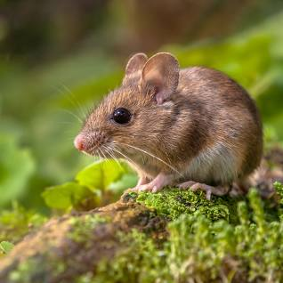

Mouse

Mice are small rodents that belong to the family Muridae. They are known for their adaptability and diverse habitats.
Physical Characteristics
- Size: Mice are typically small, with body lengths ranging from 2.5 to 4 inches (6.5 to 10 cm) and tails of similar lengths.
- Coat: They have fur-covered bodies with colors that vary widely among species, including shades of brown, gray, and white.
- Long Tails: Mice have long, thin tails that help them maintain balance and communicate with other mice.
Behavior and Habitat
- Habitat: Mice are found worldwide in various habitats, including forests, grasslands, urban areas, and even deserts.
- Nocturnal: Many mouse species are nocturnal, meaning they are most active during the night.
- Reproduction: Mice are prolific breeders, and they reproduce quickly. Females can have multiple litters in a year.
Diet
Mice are omnivores, consuming a wide range of foods such as seeds, grains, fruits, insects, and even small animals.
Conservation Status
Due to their adaptability and widespread distribution, most mouse species are not currently threatened. However, some island species have faced habitat loss and predation from invasive species.
Interesting Facts
- Gnawing: Mice have strong teeth that never stop growing. They gnaw on various objects to wear down their teeth and keep them at a manageable length.
- Communication: Mice communicate using a combination of vocalizations, body language, and pheromones.
- Domestication: The domesticated house mouse (Mus musculus domesticus) is commonly used in laboratory settings for scientific research.